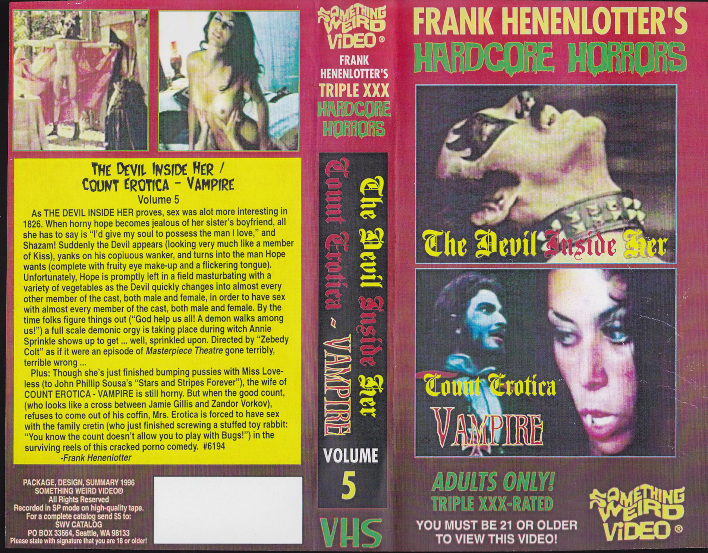
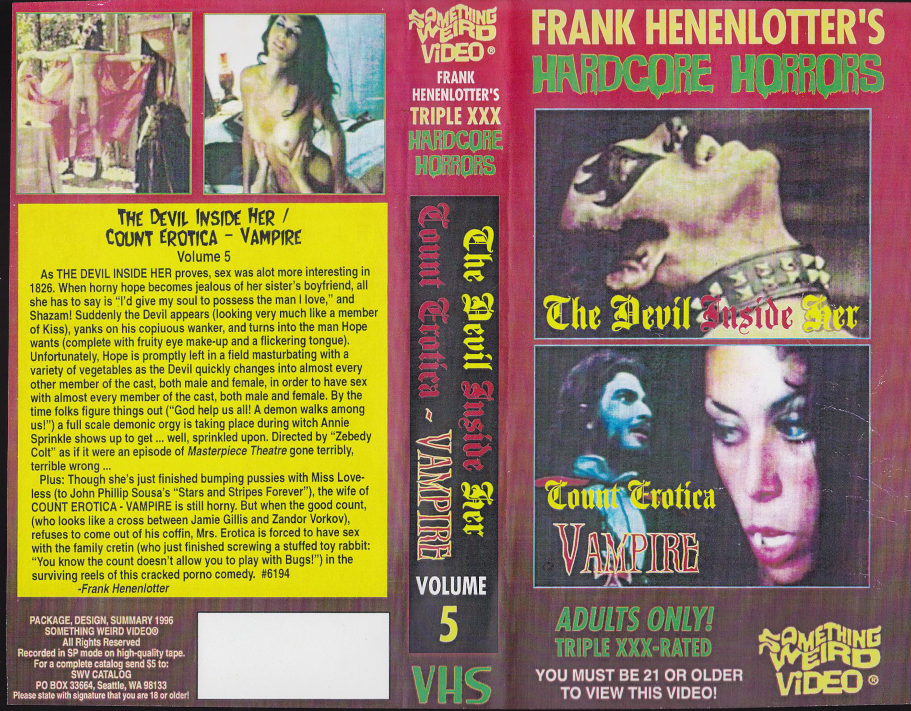

The land of Ashes lays somewhere between a big ocean a steep mountain. There is an only town there, made from vastness of small houses. They are made from wood and colored glass and build wall to wall so nobody feels left out. Streets are very tight. Going through the whole city feels like going through a big labyrinth. While squeezing through never ending facades you can get a glimpse of the inside — blankets covering floors and walls and visible heatwave coming from the fireplace. Mesmerized by the infinite lights you wander. It is hard no not get lost.
The town of Ashes is inhabited by the ghouls. Ghouls have been there forever. They were never born and so they will never be able to die. They are tall and slender. Their hair are dark, long and shiny as they would be children of the willow trees. Their skin is a little transparent. Like a window in a cold day, steamy from the inside’s warmth.1
All of them love sex. Their desire for sexual pleasure is giving them life. They feed on vital juices and those come only from their sexual intercourses. Ghouls love it in every possible way — alone, in pairs, in groups. There is literally lust in the air. Strolling through the tight streets, it’s squeezing through sweaty, hot bodies arranged in different kinds of combinations. On the pavements, at the walls, in the windows, on the windows, inside of the houses. It’s impossible to not be stopped or stop and not to be lost in the desire. In the world of the Ashes there are dicks and vaginas but just as body parts. Having one or another never determined anything. As it was as old as the imagination of the Ghouls, and imagination of them is as we know infinite, nobody ever though of one way of using them.2
They are extremely caring and loving for the whole community. Ghosts cannot get pregnant as they have never been born so this caring feature of theirs is held within already existing ones.
1Vampires, are those who have been always there. They are people who because of their different behavior or physicality were pushed away from prevailing norms. In Poland everyone who stands on the opposition side is treated either with hate or with negligence. While Church was for many years highly influential in political affairs, the conflict was spiced up also with religious aspects. When conservative, governmental power started to be more direct and violent, it happened that some groups united together as never before. Queer communities, women, people with disabilities also immigrants from many countries threatened by war - all different they all stood together to demand equal rights and fight for a brighter future.
2Sexual notion in this story comes from a reference to polish theorist Maria Janion. Vampire both attracts and repels people. It is a response to the fear of death and the horror of the decay of the human body. It is an expression of hidden sexual desires and fantasies, in particular those stigmatized by social customs like homosexuality or sadism. The vampire represents what is forbidden, stands in opposition to Christian beliefs. His habit of drinking blood, which is to ensure his earthly immortality, is a reversal of the meanings of the sacrament of the Eucharist.
 
